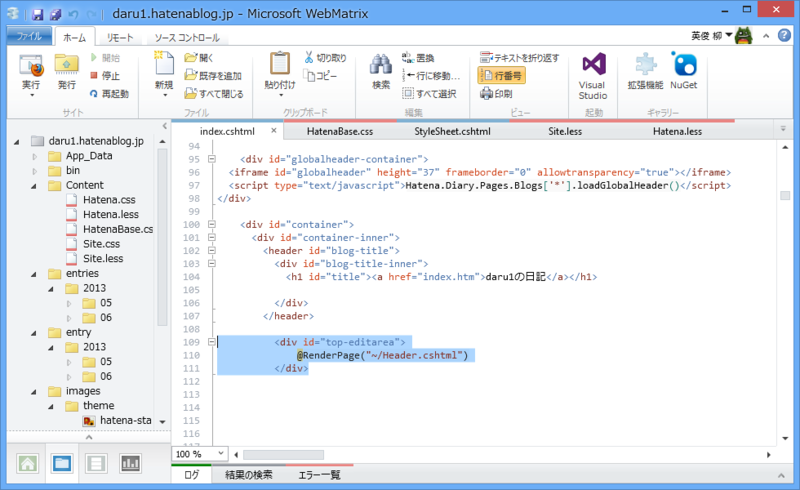
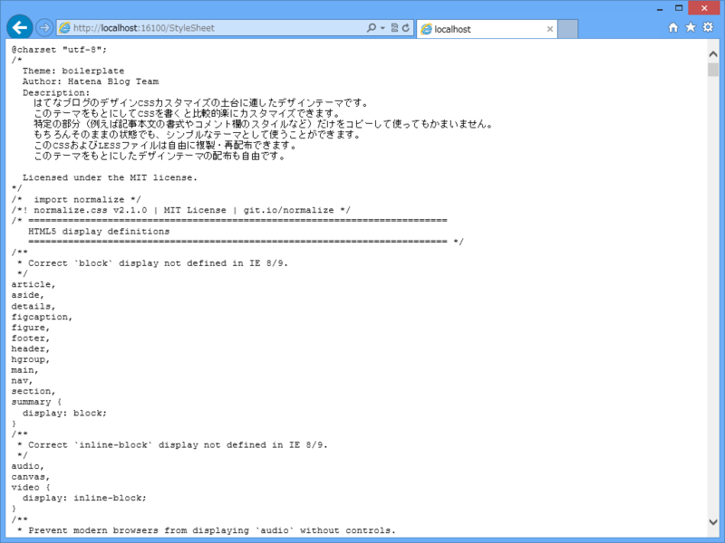

WebMatrix 3: はてなブログをデザインする
公開日：

今回は WebMatrix 3 ではてなブログのデザインをいじってみた。みんな、はてなブログのデザインを作るときってどうやってるのかなぁ。あんまり効率のいい方法って思いつかなかったのだけど、こんなのはどうかな、というのを考えてみた。
テーマ確認用のブログを開設する
上記リンクを参考に、テーマ確認用のブログを開設。サンプルエントリーをコピーして、ひととおりの HTML タグをテストできるようにする。自分の場合は、それに追加して、
- /about
- /archive
へのリンクを含むページを作っておいた。そうすると、次のステップではかどる。
テーマ確認用のブログをローカルにダウンロードする
この手のソフトはいろいろあると思うのだけど、たまたまこういうのを目にしたので、今回はそれを使ってみた。

まぁ、悪くはないかな。
サンプルエントリーには /archive へのリンクがないと思うので、ひと手間かけてリンクを足しておくと、こういったソフトで一気にダウンロードできて便利。
ローカルフォルダを WebMatrix 3 で開く

ダウンロードしたサイトを保存したフォルダを WebMatrix 3 で開く。コンテキストメニューから開けるよ。実行すれば、ローカルサーバーでホストされ、ちゃんとサイトが表示されるはず。
わざわざ WebMatrix 3 を利用する理由は、いくつかある。
- テキストエディター：HTML/CSS の入力補完が効く
- LESS：構造的に CSS が書ける。はてなでも採用しているみたい（WebMatrix で LESS を使おう！ - だるろぐ）
- テスト：システムにインストール済みのブラウザーでテストできる（iOS エミュレーターもある）
- ASP.NET Web Page 2：ページを分割できる（後述）
- レポート：ダメなマークアップを指摘してくれる（参考程度）
- セットアップ：IIS とか Apache とか用意するの面倒じゃね？
まぁ、こだわればいくらでもいいツールはあると思うのだけど、オールインワンでめんどくさくないのが WebMatrix のいいところだと思う。
ASP.NET Web Page 2
たとえば、はてなブログにはヘッダーやフッター、記事の下にカスタム HTML が挿入できる。まぁ、それをソースにべた書きしてもいいのだけれど、できれば別ファイルに分離した方がいいよね。
そういうときに ASP.NET Web Page 2 の美味しい部分を使ってやるといい。
まず、index.htm を index.cshtml へリネーム。

これだけでも ASP.NET Web Page が使えるのだけど、そのままだと v1 をつかう羽目になるので、アップデートしておく。

次に、#top-editarea 内を以下のように書き換え。
<div id="top-editarea"> @RenderPage("~/Header.cshtml") </div>
これでヘッダーに挿入できるカスタム HTML を Header.cshtml へ分離できた。
ほかにもこんな使い方はどうかな。
スタイルが膨大になると、役割ごとに CSS ファイルを分割したくなる。けれど、はてなのデザイン画面に貼り付けるときは、それを一つに統合しなきゃいけない。
ので。
# ~/StyleSheet.cshtml@{ var path = Server.MapPath("~/"); }
<pre> @File.ReadAllText(path + "Content/HatenaBase.css") @File.ReadAllText(path + "Content/Site.css") @File.ReadAllText(path + "Content/Hatena.css") </pre>
こんな感じのコードを書いてやる。

すると、/StyleSheet を叩くだけで結合済みの CSS が得られる。たいしたことじゃないけど、こういう使い方もありかな。
ちょっとイレギュラーな使い方かもしれないけど、こういうのもあるということで。